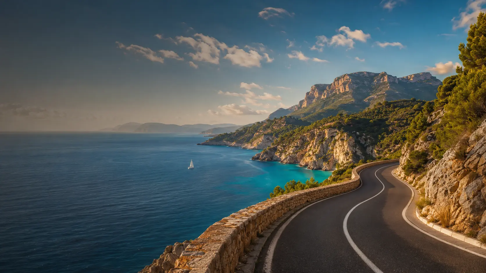

The sea does not make every island the same.
Routes, seasons, villages, water, food and the small decisions that change a journey.
Explore coastal worlds →
THE CONTINUOUS TRAVEL EDITION
TripWey follows places as they are lived: the route, the season, the people, the address, the story — and what is changing now.
Enter the world ↗WHERE TO GO, AND WHY NOW
Not destinations reduced to rankings. A living atlas of cities, coastlines, islands and landscapes, told through their changing energy, culture and practical realities.
Routes, seasons, villages, water, food and the small decisions that change a journey.
Explore coastal worlds →TRIPWEY ROUTES
A good route is not the shortest line. It is a sequence of places that belong together.
Choose a way through →STAYS WITH A SENSE OF PLACE
Hotels, houses, lodges and places to stay that make you understand where you are — not forget it.
FROM THE FIELD
People, food, architecture, local change, travel conditions and cultural moments. The stories beneath the itinerary.
TRIPWEY SCREEN / SOCIAL FIELD
Field video, creator dispatches and trusted social signals live here. Every clip remains attached to its place, source and moment — never a random feed.
WEYQUERY FOR TRAVEL
Search a city, a route, a season, a museum, a beach or a question. TripWey answers with sources, context and the right language.
TRIPWEY LETTER